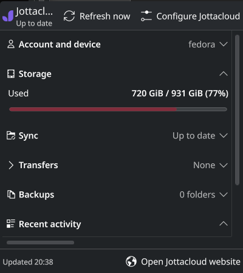
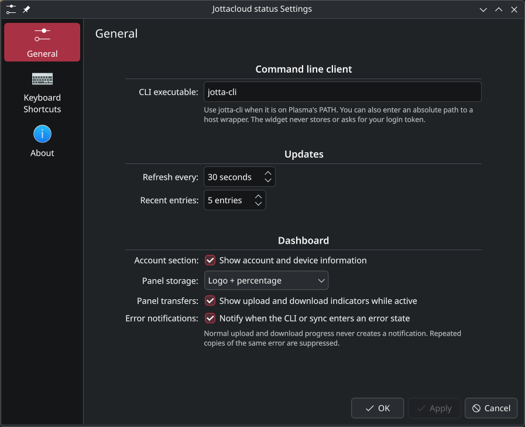

Made for the panel
Compact by default: show the logo alone, the logo with usage, or a full size and sync summary. Transfer arrows appear only while something is moving.
Unofficial community project — not affiliated with, endorsed by, or supported by Jottacloud AS or KDE e.V.
KDE Plasma 6 widget · MPL-2.0
On Linux, Jottacloud ships as a command-line client rather than a desktop app. This widget brings jotta-cli into your KDE Plasma 6 panel: sync state, storage, transfers, read-only backups, and recent activity — no tokens, no private API.

Example data · the dashboard adapts to your panel and desktop.
Features
The widget uses the same documented CLI commands you already run, and loads detail only when you open a section.
Compact by default: show the logo alone, the logo with usage, or a full size and sync summary. Transfer arrows appear only while something is moving.
Used and capacity with a usage bar in the dashboard, in the binary units the CLI reports. Finite accounts show a clear percentage.
Sync root, current state, local and remote file counts, progress, plus current and recent uploads and downloads — fetched only when you look.
Every configured backup folder with its status. The widget never edits backup definitions and has no destructive controls.
Recent sync log entries and the last successful update, with one deduplicated notification when the CLI or sync reports a real problem.
Follows your Plasma color scheme, stays usable in narrow panels, and ships in English and Norwegian Bokmål.
Screenshots
The compact view lives in the panel, the dashboard opens on the desktop, and everything in between is configurable.
Logo, percentage, and sync state at a glance. Choose exactly how much the panel shows.
Storage, sync progress, transfers, read-only backups, and activity in one popup.

A short settings page: CLI command, refresh interval, panel display, and notifications.
Install
The widget installs for the current user. No sudo, no background service, no second daemon.
kpackagetool6jotta-clijottad daemongit clone https://github.com/oal/jottacloud-kde.git
Verifies the Plasma tools and that jotta-cli status --json actually works.
./tools/check-environment.sh
Installs the widget and registers the icon, then add Jottacloud status from right-click panel → Add Widgets.
./tools/install.sh
Restart Plasma only after changing metadata.json: ./tools/install.sh --restart. If the CLI is missing or fails, the widget shows an offline state and keeps the last good snapshot.
$ git clone https://github.com/oal/jottacloud-kde.git
$ cd jottacloud-kde
$ ./tools/check-environment.sh
ok kpackagetool6 -> /usr/bin/kpackagetool6
ok plasmawindowed -> /usr/bin/plasmawindowed
ok qmllint -> /usr/bin/qmllint
ok node -> /usr/bin/node
ok CLI -> /usr/bin/jotta-cli
$ ./tools/install.sh
==> installed to /home/you/.local/share/plasma/plasmoids/io.github.oal.jottacloud-kde
==> Add it from: right-click the panel -> Add Widgets -> "Jottacloud status"./tools/package.sh builds a distributable .plasmoid./tools/install.sh --remove uninstalls the widgetnode --test tests/*.test.mjs runs the pure-logic testsConfigure
A short configuration page, mirroring your panel habits: sane defaults, nothing hidden that changes your account.
jotta-cli resolved from Plasma's environment. Point it at an absolute path or a non-interactive container wrapper when needed.status, list, log, and syncpausedFAQ
jotta-cli and its jottad daemon; it does not authenticate on its own or replace the official client. Log in once with the CLI, then add the widget.jotta-cli status --json.syncpaused state. Backup folders keep running and are displayed read-only.jotta-cli/jottad installation. The widget never asks for a token, never stores one, and never talks to Jottacloud's private API../tools/install.sh to upgrade, or ./tools/install.sh --remove to uninstall. Restart plasmashell after metadata changes with ./tools/install.sh --restart.{kind=link}
{kind=link}
{kind=link}